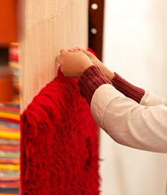

Guild History and Information
Art Through The Loom Guild was founded more than thirty-five years ago in the Northern Rio Grande Valley with the idea of training youth to work with traditional Chimayó weavers. It was the hope of members that by doing this, weaving traditions would be handed down through generations. The guild presents weaving exhibitions and promotes weaving and hand-spinning skills. Although the guild was begun on the premise of handing down traditional weaving practices, it is by no means limited to traditional looking pieces.
Our focus is on weaving, spinning, and dyeing, and, to a lesser extent on techniques that use handwoven, handspun, or hand-dyed materials including knit and crochet items, dolls, and colcha.
Guild members participate as a group in three to four shows and sales each year. We sponsor workshops and discussions focused on developing a successful fiber arts career.
Membership and Dues
The Guild year runs from July 1 through June 30. Dues are $25 per year. To join or renew for the current Guild year, send your check, made out to ATTL to:
SANDY VOSS
PO Box 10
Abiquiu NM 87510.
Indicate the guild year on your check. Include your mailing address, phone number, email address
Guild Officers
President: Glenna Dean, puchteca@windstream.net
Vice President: Barbara Roybal, blroybal@gmail.com
Treasurer: Sandy Voss, 505-753-6395 sandyvoss@cybermesa.com
Secretary:
Guild Services
Newsletter Editor: Judy Chapman
Facebook: Linda Bentley
Web Developer and Support: Rita Starceski, attl@rita.com
